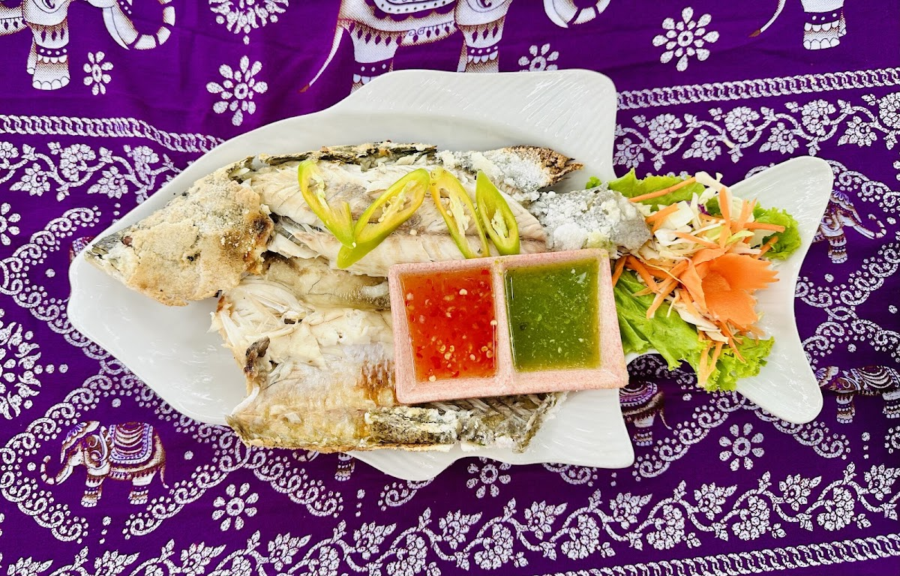
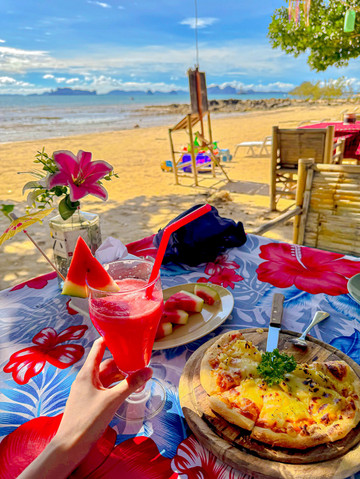
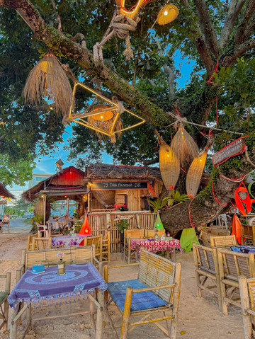
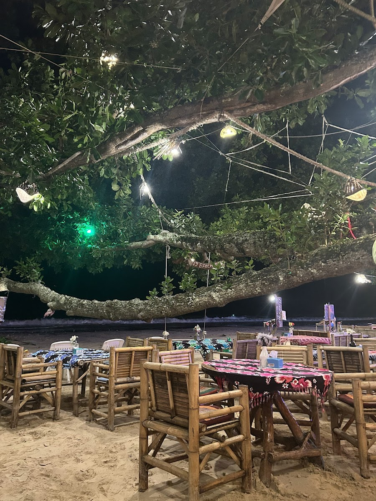
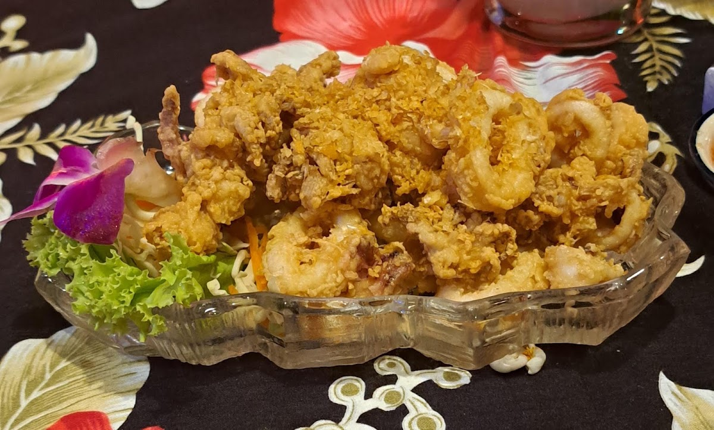
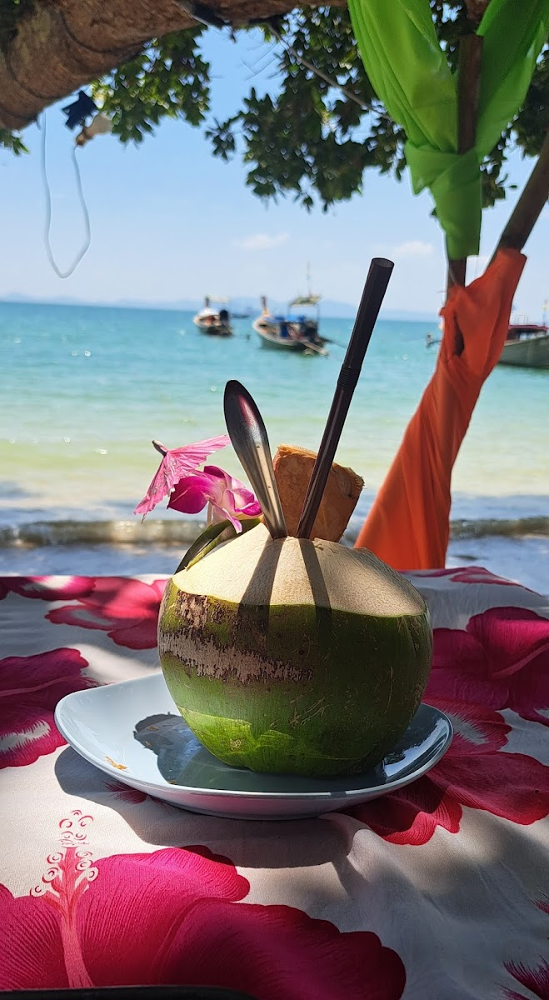

Something from the sea
01Seafood, Thai flavours and a view to match.
KOH KWANG BEACH · KLONG MUANG
Thai flavours, tables by the sea and a warm welcome. Find your little corner of Krabi at 79.
Here for a holiday. Here for a while.
There’s a place for you at 79.


Welcome to our kind of place.
Stay a little longer.THIS IS 79
A table in the sand. The sea beside you. Something delicious to share. At 79, the setting does the talking.
Find us on Koh Kwang Beach in Klong Muang — a relaxed spot for a long lunch, dinner by the water or an evening with friends. Whether you’re visiting Krabi or call it home, come and make yourself comfortable.
Bring your appetite. Leave the rush behind.
Blue-water afternoons. Tree-lit nights.
GOOD FOOD. GREAT SETTING.
Thai favourites, seafood and something to share.
Ask the team for today’s menu and prices.

Seafood, Thai flavours and a view to match.

Colourful plates made for leisurely lunches.

Take your time. Enjoy the sea breeze.
A LITTLE LOOK AROUND
A WORD FROM A GUEST
“Great spot on the beach. Lovely food and good service”
davenick1 · Tripadvisor · August 2026
Read independent reviews ↗MAKE AN EVENING OF IT
Planning dinner, a relaxed lunch or a gathering with friends? Tell the team when you’d like to come.
A request, then a personal reply.
Send your details by email or Facebook. Your table is booked only when the restaurant confirms.
All times are local to Krabi (Thailand). Beachfront seating depends on availability, weather and tides. This form does not check live table availability.
SEE YOU BY THE SEA
Koh Kwang Beach, Klong Muang
Nong Thale, Krabi, Thailand
Planning a visit today? Message the team to confirm opening hours and table availability.